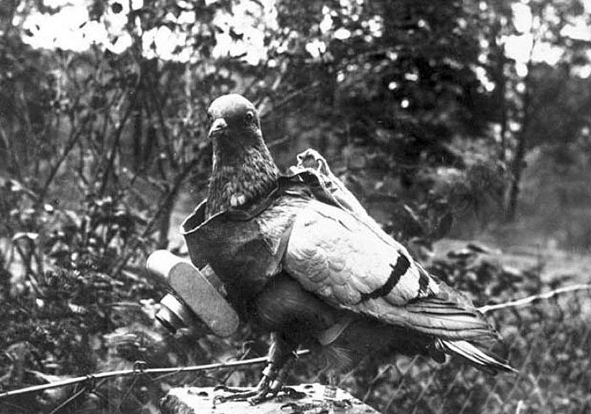
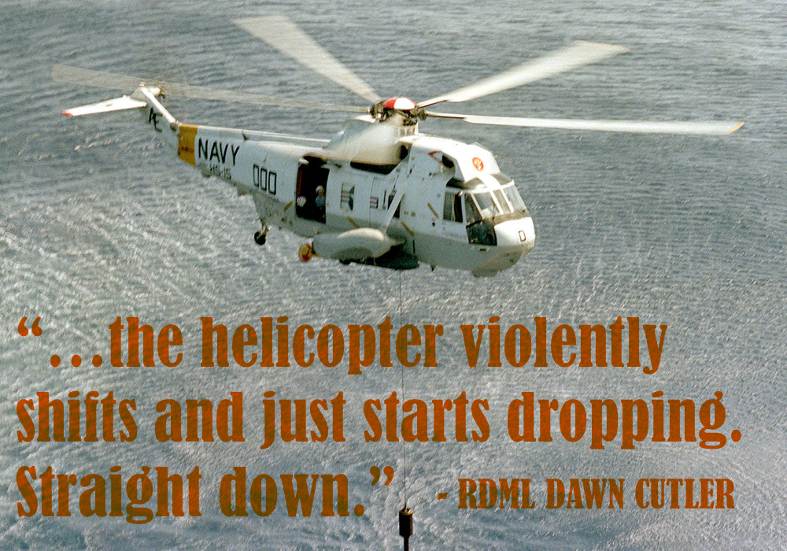

Speeches
My speechwriting process has four steps:
- Understanding the main point of the speech and understanding what the audience should walk away remembering.
- Research. Research. Research. Find the story, find a hook, and find a way to wrap it around the main points.
- Write. Read it aloud. Rewrite. Find the pacing. Rewrite some more.
- Deliver on deadline.
I write speeches for myself and for executives. Here are a few examples of both.

"To The Crazy Ones: Navy’s 242nd Birthday" [October 13, 2017]

"Implications of the near and far future" [June 30, 2016]

"The Cutting Edge and Cool" [September 26, 2015]

Executive Speechwriting: "Lifting Up The Next Generation Of Women Leaders" [June 16, 2017]

Executive Speechwriting: "Trust in a competitive, complex and crazy world" [March 30, 2016]